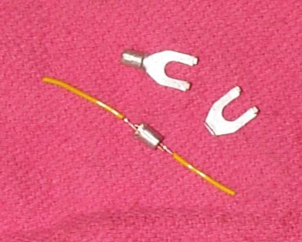

Photo: Dan's Motorcycle Repair Course (dansmc.com), used with permission.
A crimp connector squeezes a metal sleeve around the wire strands. It is quick, needs no heat, and holds in hot places where solder can soften, such as wires leaving a stator under the flywheel. Use it when a new part has short leads, or when a wire must be joined away from a workbench.
Safety
- Disconnect the battery negative (-) first.
- Wear eye protection when you cut and strip wire.
- Wires from a charging coil carry a lot of current. A loose or undersized joint there will get hot and burn.
You need
- A connector that matches the wire thickness. The colour or size mark on the connector shows what it fits.
- Wire of the same thickness as the old wire or thicker, if you need to add length.
- Proper crimping pliers. Ordinary pliers crush the sleeve and leave a loose joint.
- Heat-shrink tubing to cover the joint.
Steps
- Switch off and disconnect the battery negative (-).
- Cut out the damaged section or the old plug.
- Strip the insulation for the length of the metal sleeve inside the connector. Do not nick the strands.
- Slide heat-shrink tubing onto the wire first.
- Twist the strands lightly and push them fully into the connector. No strands should stick out at the side.
- Crimp firmly with the correct jaw of the pliers. Crimp each end separately.
- Pull hard on each wire. It must not slip out. If it does, cut off the connector and redo it.
- Slide the tubing over the joint and shrink it so it seals the ends.
- Stagger joints so two joints do not sit side by side in the harness.
- Tie the wires so they cannot rub on the crankcase or flywheel. Route them the same way as before.
Check your work
- Both wires hold under a firm pull.
- No bare metal shows and nothing can touch the frame.
- The circuit works, and the joint stays cool after a test run.
If it did not fix the problem
- Still no signal: Find a wiring fault or Test the stator (generator coils).
- Prefer a soldered joint in a cool, dry place: Join two wires by soldering.